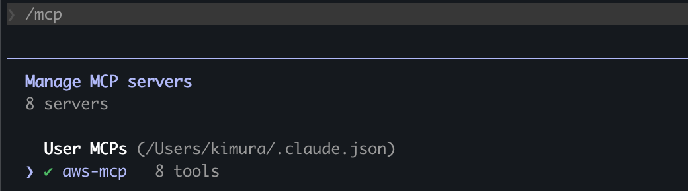
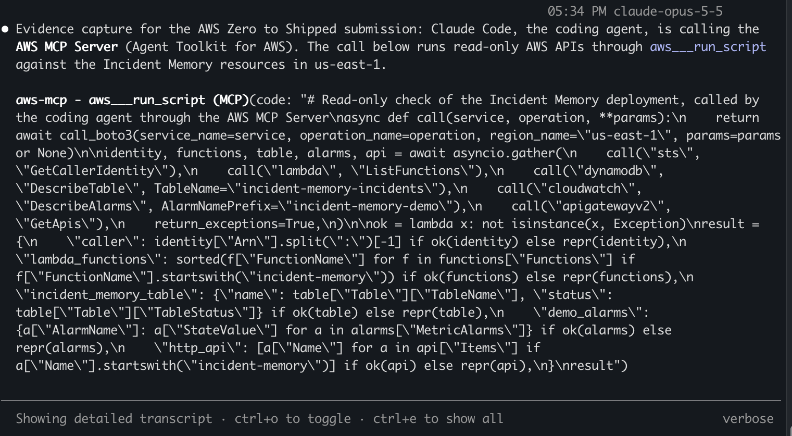
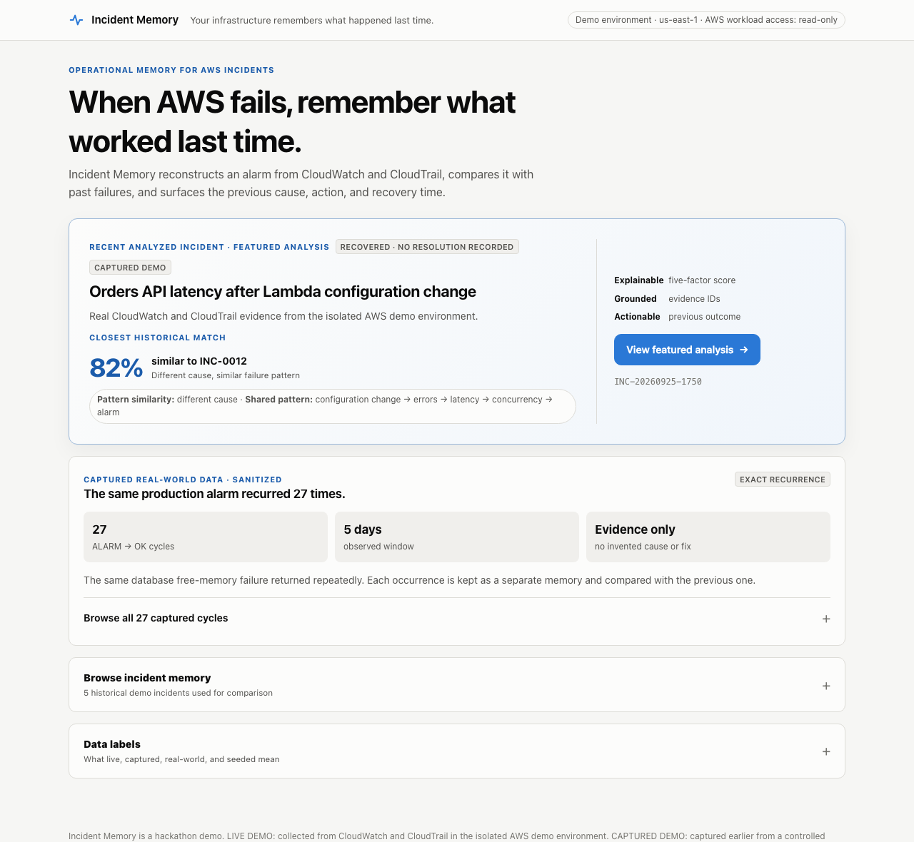
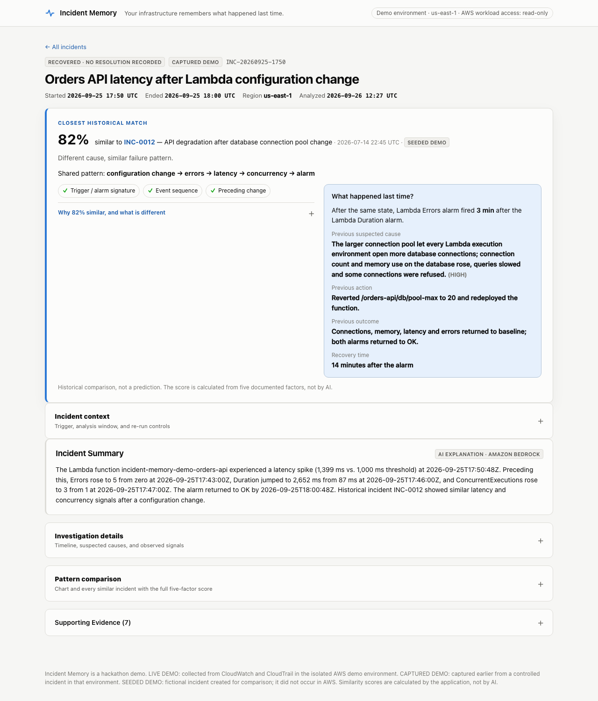
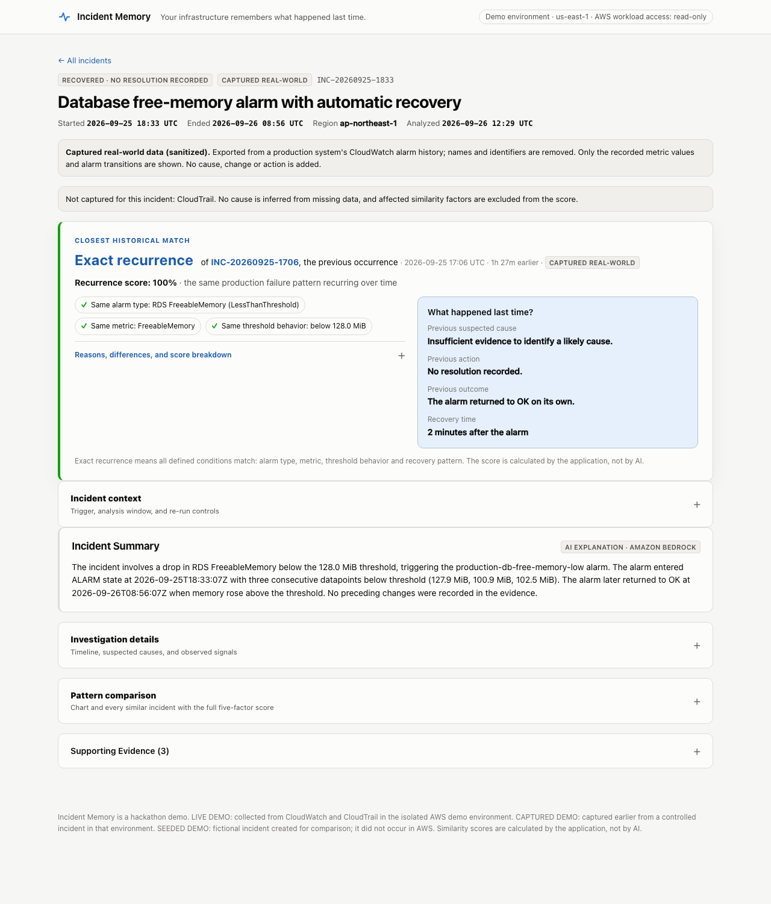
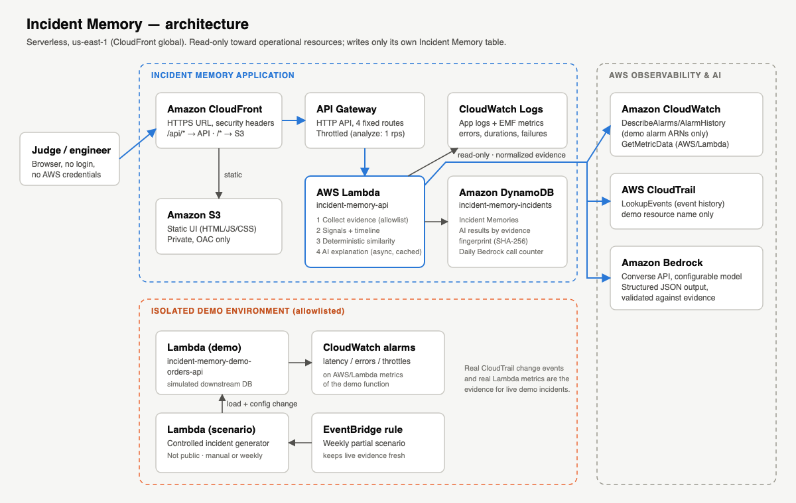

Evidence
Live app: https://d2zs12dmk7373h.cloudfront.net · Category: Commercial potential · Track: Startups. All screenshots are sanitized: no account IDs, ARNs or production resource names.
1. Coding agent connected to AWS
Built with Claude Code, connected to AWS through the Agent Toolkit for AWS (AWS MCP Server),
using a dedicated IAM user limited to the project's incident-memory-* resources in us-east-1.

/mcp panel: aws-mcp ✔ 8 tools (user MCP server).
aws-mcp - aws___run_script with read-only calls (GetCallerIdentity,
ListFunctions, DescribeTable, DescribeAlarms, GetApis). Result: caller user/sandbox; Lambda functions
incident-memory-api, incident-memory-demo-orders-api, incident-memory-demo-scenario;
table incident-memory-incidents ACTIVE; 3 demo alarms OK; HTTP API incident-memory-api.AWS-side record: CloudTrail logged the agent's MCP calls with eventSource: aws-mcp.amazonaws.com
(CallReadWriteTool, DestroySession) and user agent mcp-proxy-for-aws/1.7.0.
How it was used: the agent designed and built the backend, UI, tests and Terraform (about 40 resources),
ran every terraform plan through a safety gate that blocks changes outside the project, ran controlled
incidents in AWS, and verified the live URL. The builder wrote the specification, reviewed the demo and approved
infrastructure changes.
2. The live app



3. Architecture
